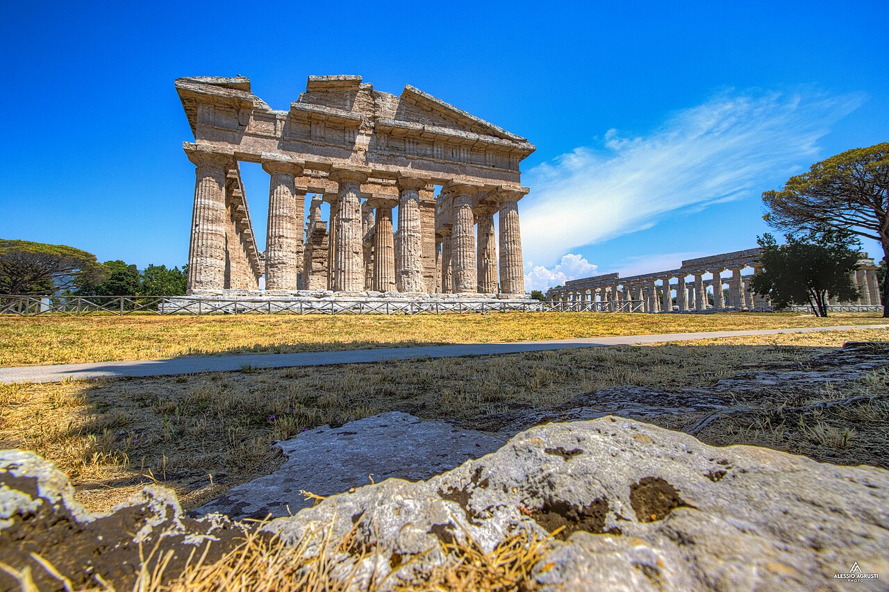
Magna Grecia · Capaccio-Paestum
Paestum, Poseidonia
Alle 7 del mattino, tra papaveri e travertino biondo, i tre templi del VI–V sec. a.C. ronzano solo di cicale. Atene, così intatta, non ce l'ha più.
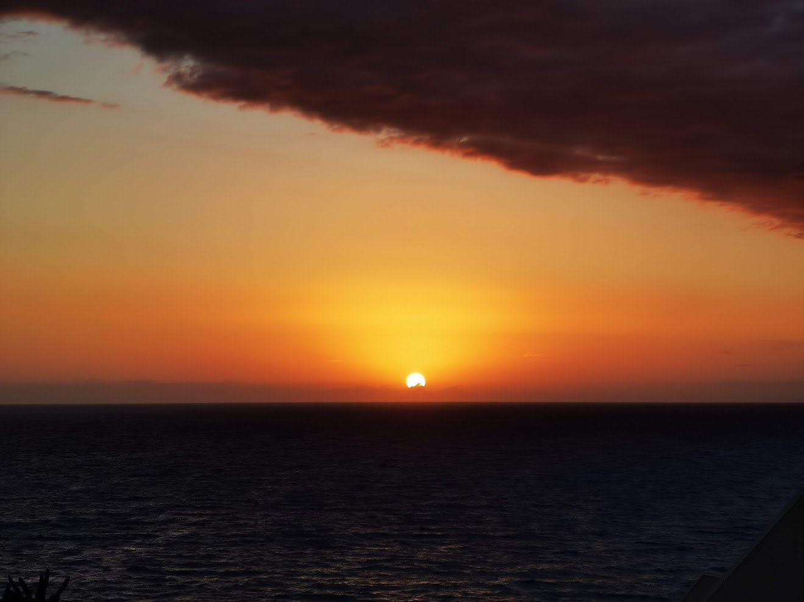
Salerno QSR · 40′ da PaestumParco Nazionale, UNESCO 1998, 100 km di costa
Templi dorici che Atene non ha più, baie che si aprono solo dal mare, borghi dove Ancel Keys ha capito perché qui si vive più a lungo. Dimmi che viaggiatore sei. Ti dico quale Cilento è il tuo.
Scegli la tua costa20 luoghi, 20 caratteri. Non 20 spiagge uguali.
Il Cilento che tutti conoscono, quello che quasi nessuno conosce, e la parte esotica e più resiliente. Ognuno con il suo mare, la sua pietra, il suo ritmo. Filtra per voglia, non per stelle.

Magna Grecia · Capaccio-Paestum
Alle 7 del mattino, tra papaveri e travertino biondo, i tre templi del VI–V sec. a.C. ronzano solo di cicale. Atene, così intatta, non ce l'ha più.
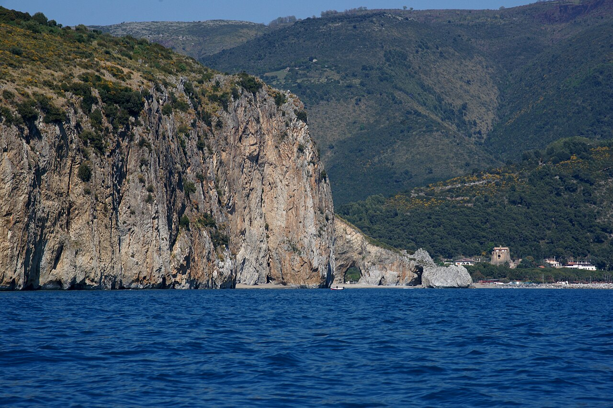
Mare selvaggio · Centola
Arco Naturale a prua, poi tuffo al Buondormire dove la sabbia scricchiola bianca e la falesia odora di resina calda.
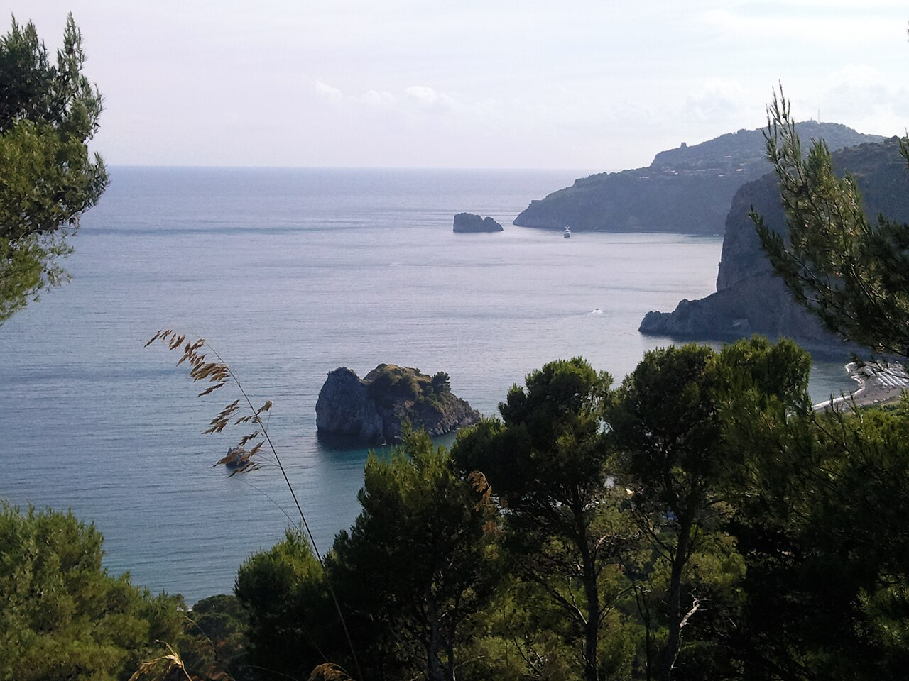
Cala dopo cala · Camerota
Da Lentiscelle a Cala Bianca conti le torri saracene a nuoto, con l'olio degli ulivi centenari ancora sulle mani dal pranzo.
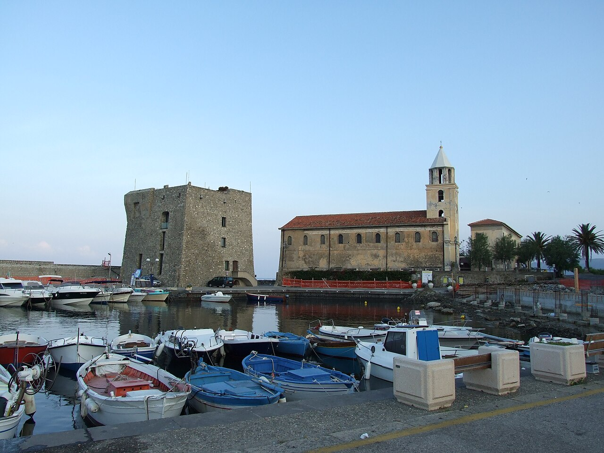
Borgo lento · Pollica
La sera il porto spegne i motori e resta il rumore dei bicchieri. Qui Hemingway ascoltava i pescatori e Keys misurava la longevità a colpi di olio EVO.
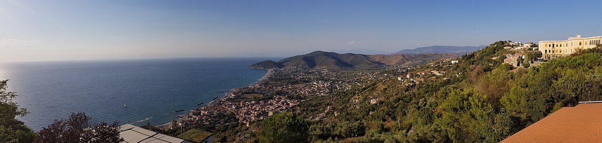
Borgo sul mare · UNESCO
Dal castello normanno scendi verso Punta Licosa tra mirto pestato dai passi, e il Tirreno sotto è verde-bottiglia contro calcare bianco.
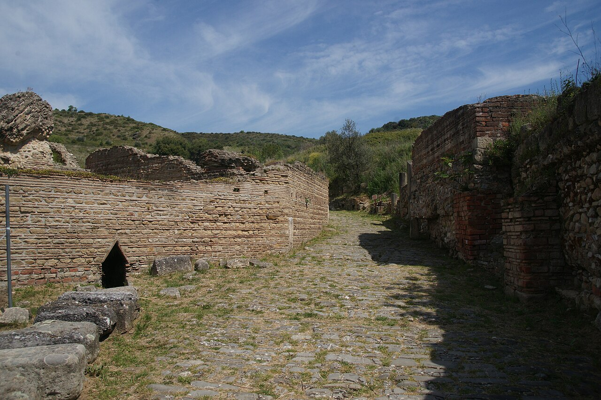
Filosofia · Ascea
Cammini sulla Porta Rosa, il primo arco a tutto sesto greco, dove Parmenide pensava l'essere. Sotto, a dieci minuti, Ascea Marina ti rimette i piedi in acqua.
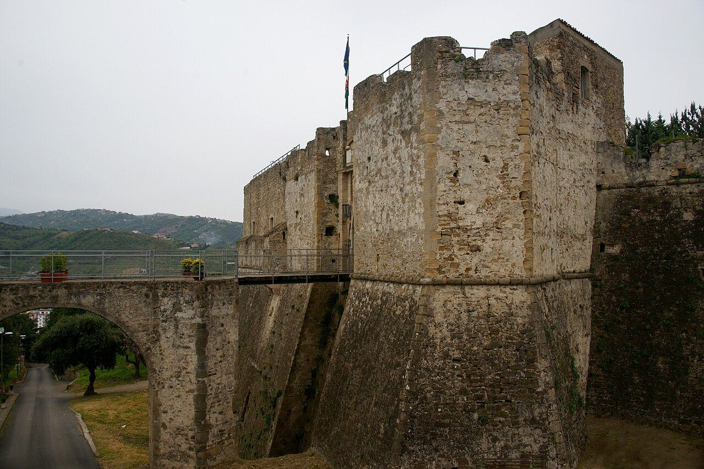
Porta del Cilento · Agropoli
Scaloni in pietra ripida, castello aragonese controvento, e a Trentova l'acqua sa di sale vero dopo il treno da Napoli. Questa è la porta, non la tappa.
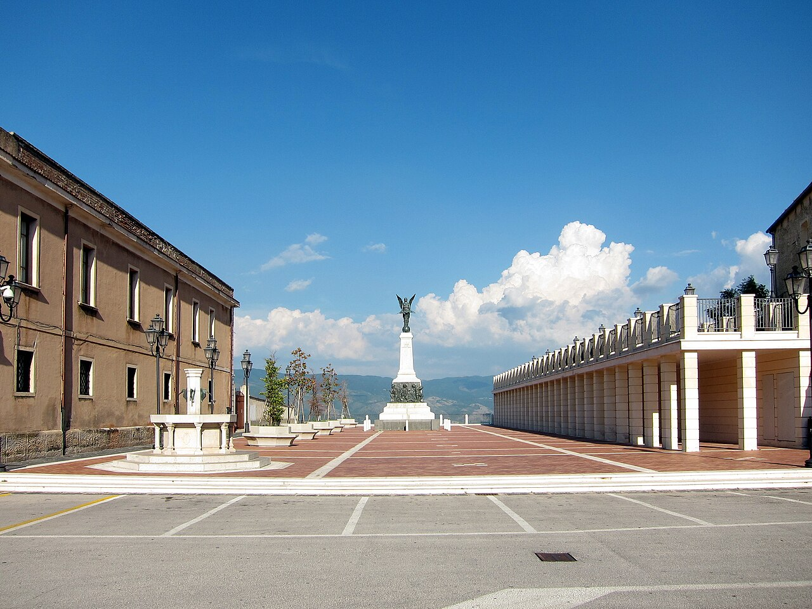
Parco interno · Vallo di Diano
A Pertosa entri in barca nel buio che odora di fiume freddo, a Padula esci in 51.500 m² di barocco: pietra, acqua di grotta, pane cotto a legna.
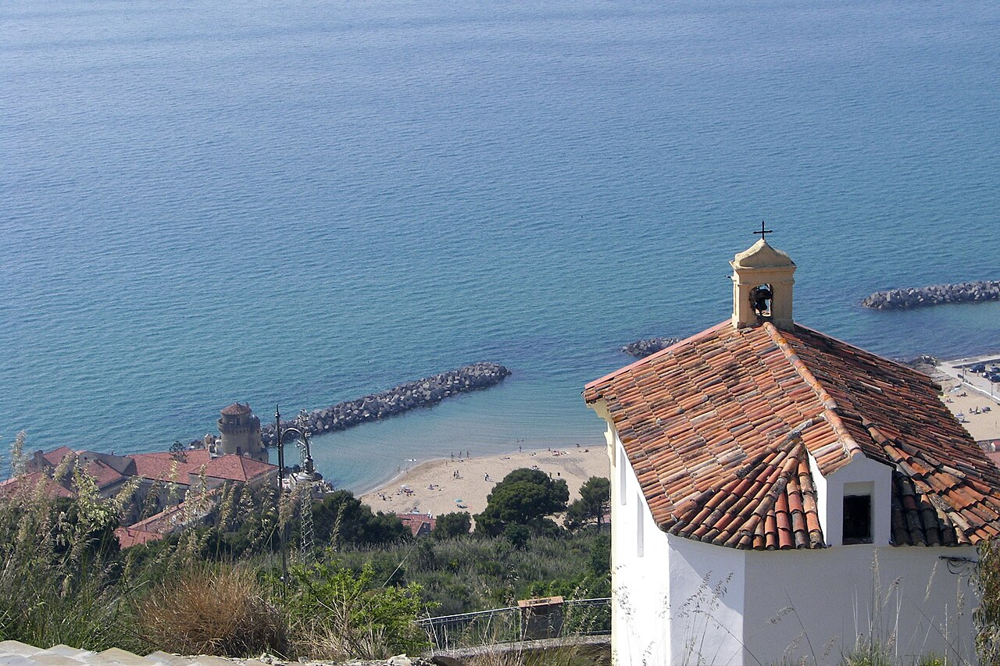
Bagni · Castello Abatese
È la Castellabate che tutti conoscono, e non è il borgo: qui scende la gente in spiaggia, al Moresco, con le navi turistiche dal porto. Sabbia fine, acqua bassa, e un castello dei principi Abatese che guarda giù sulla baia.
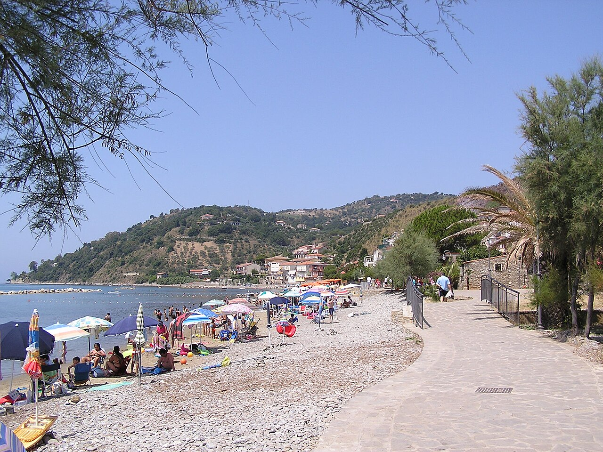
Il primo affresco del Mediterraneo
Il museo Vivente Ancel Keys: non una teca di vetro, ma il borgo stesso con le stesse case e le stesse abitudini alimentari del 1962. Olio a tavola, pesce, pane di cereali. Qui la Dieta Mediterranea non è una teoria: è quello che mangi a pranzo.
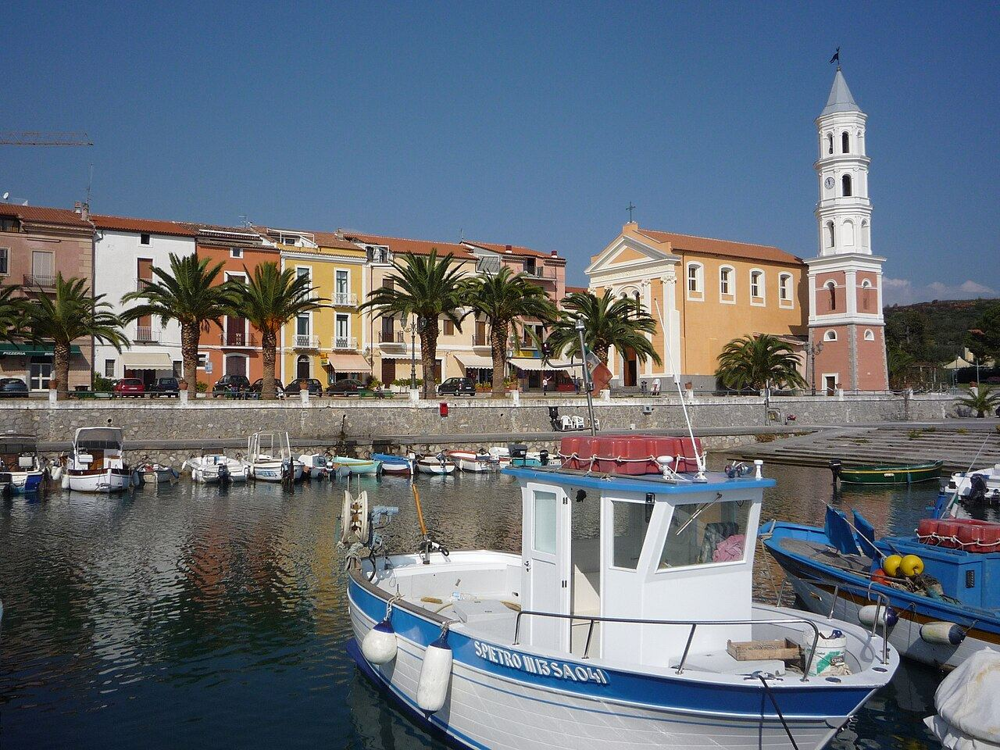
Il mare più duro · grotte del Cardano
Il punto dove il Cilento si chiude e il mare diventa scuro. Da qui partono le barche per la Grotta Azzurra e Cala delle Vipere, le grotte del promontorio del Cardano. Acqua più fredda, fondale più vero, meno mondo intorno.
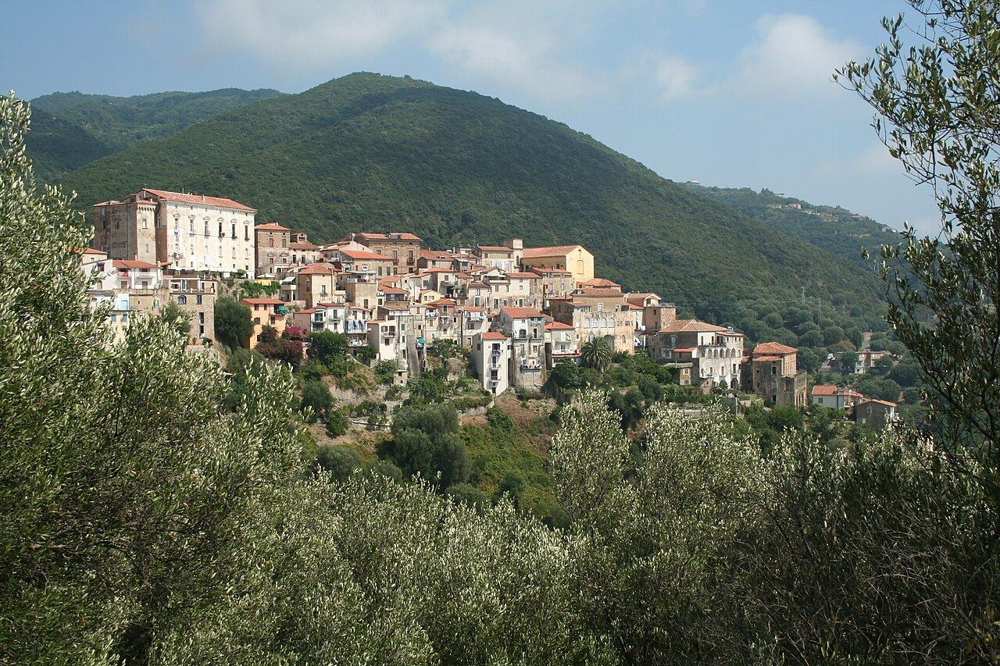
L'altro capo di fico
La porta del Golfo di Policastro. Qui comincia l'altra metà del Cilento, quella meno fotogenica e più sua: le alici di Menaica, il porto, e su per la valle del Bussentino i frantoi e i paesi dell'olio.
Parco interno · tetto del Cilento
Il punto più alto del Cilento e del sud Italia. Faggete secolari, stelle che si vedono dal mare, due laghi e la nebbia che resta fino a mezzogiorno. Non si sale per fotografare: si sale per il silenzio. Sentiero CAI da Piano del Cranio, ore 2,5 dal parcheggio.
Santuari rupestri · Ascea
Eremi incastonati nella roccia, santuari che esistono dal Medioevo, boschi che respirano. È il polmone del Cilento: acqua pulita, aria che non hai sentito in estate. Quasi nessun visitatore. Le grotte di Petina si raggiungono solo a piedi.
Dolomiti lucane · Basilicata
Pietrapertosa sospesa su un vulcano spento, Castelcivita tra le pareti, la Pertosa dove il fiume scorre al buio a 16° fissi. Acqua, freddo, roccia. Il counterpart montano del Cilento, e la parte che i turisti ignorano quasi sempre.
Casentino · Acqua e tuffi
Le «terme del Cilento»: tuffi, cascatelle e acqua che arriva fredda dalla sorgente del Calore. Cammini in mezzo all'acqua, tuffi naturali, boschi di castagno. Nessuna folla, nemmeno d'agosto.
Barocco · UNESCO
51.500 m² di barocco, uno dei complessi monastici più grandi del mondo, in UNESCO. Scale che non finiscono, biblioteca con 140 volumi antichi, chiostro dei pesci. Vale la visita da sola, mezza giornata, e ti spiega il Vallo di Diano meglio di una guida.
Litorale infresco · foce del Sele
Dove il Sele incontra il mare c'è litorale infresco: acque più fresche, fondali bassi, e la spiaggia dove la tartaruga caretta depone ancora. Un angolo selvaggio a due passi dai templi di Velia. Non c'è nulla costruito, ed è il punto.
Il Cilento che lavora
Qui non si viene per la spiaggia: si viene per la pesca. Cantieri, alici, braci e corna di bufalo. Morra è il porto industriale del Cilento, Pisciotta l'altra faccia, quella che si sveglia alle quattro. È la resilienza come economia: il mare non è un amenità, è un lavoro.
Il mare come frontiera
La costa del Cilento è anche rotta di passaggio. A Ispani, Roccella e Sapri le associazioni di soccorso monitorano il mare ogni giorno e i guardacoste fanno la più difficile rotta del Mediterraneo. È la parte scomoda, attuale e meno raccontata di questa guida: il mare che abbiamo descritto come bellezza, per qualcuno è stato una soglia.
Nessun luogo in questa categoria.
Il Cilento non chiude a settembre
Aprile-maggio: 18–22°, papaveri tra i templi, sentieri del Monte Stella senza caldo. Paestum e Velia quasi deserte al mattino. Sagre del carciofo e della fragola.
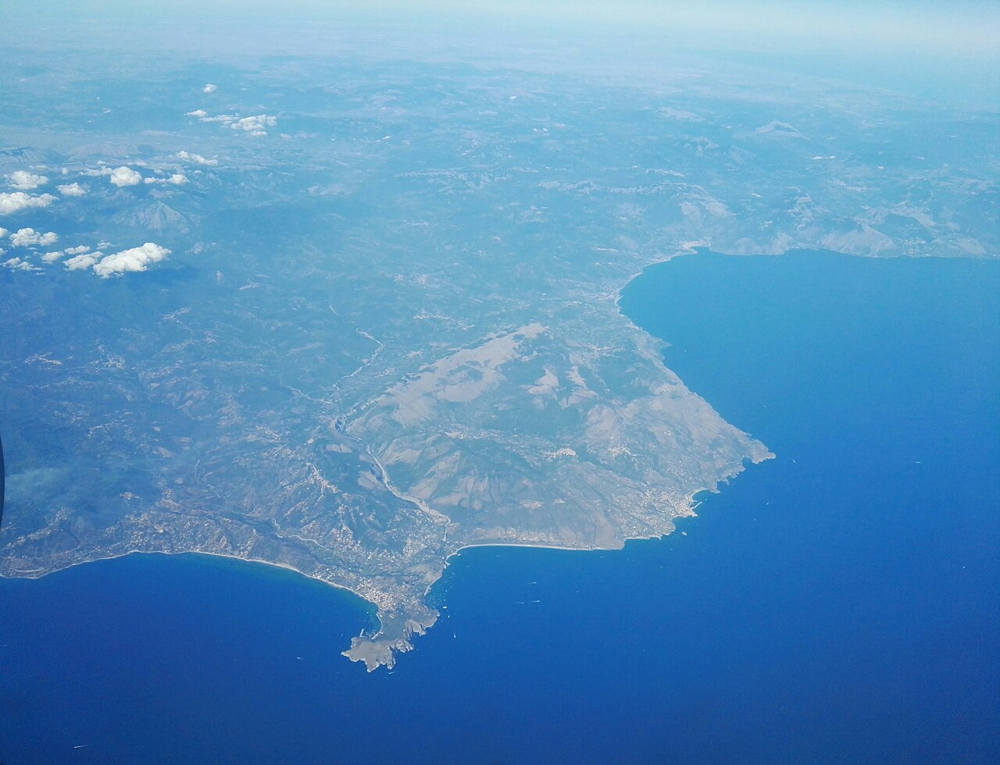
Giugno-agosto: Baia del Buondormire e Cala Bianca prima delle 10, borghi dopo le 21. Prenota barche e tavoli. Punta Licosa a piedi al tramonto, non alle 13.
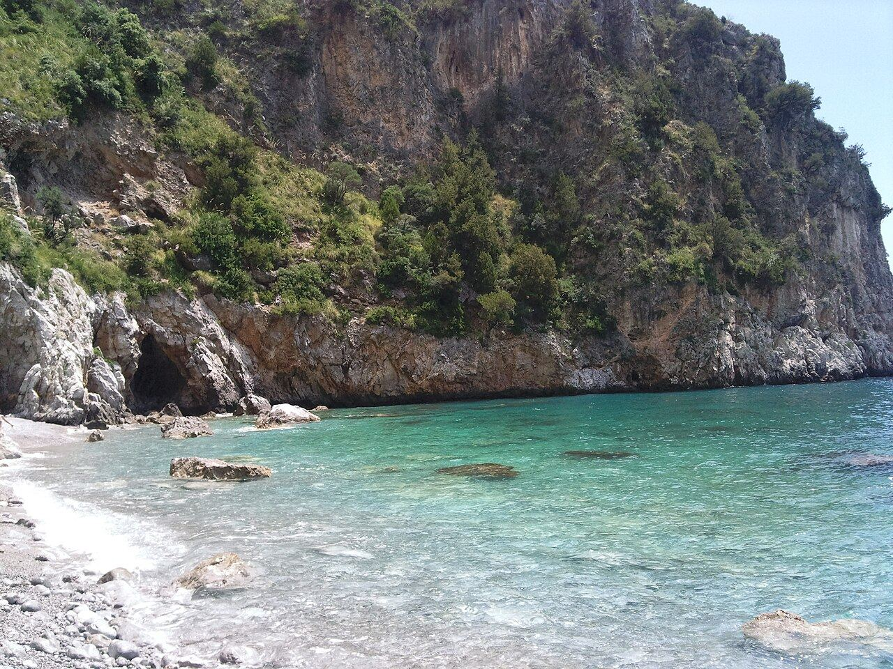
Settembre-ottobre: il mese migliore. Acqua ancora a 23–25°, spiagge svuotate, vendemmia e frantoi aperti. Teggiano e Padula con nebbie del mattino bellissime.
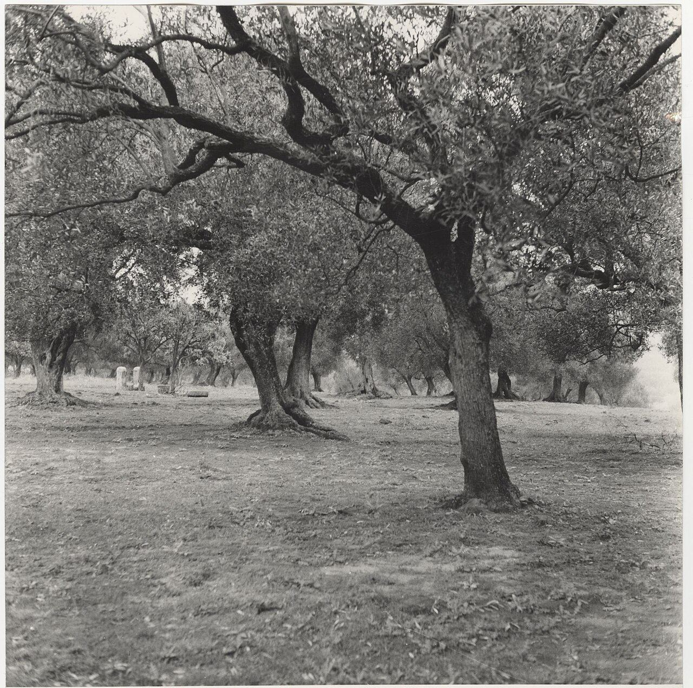
Novembre-marzo: borghi veri, nessuna fila. Certosa di Padula, Grotte di Pertosa (sempre 16° dentro), zuppa di ceci e lagane. Cervati a volte innevato.
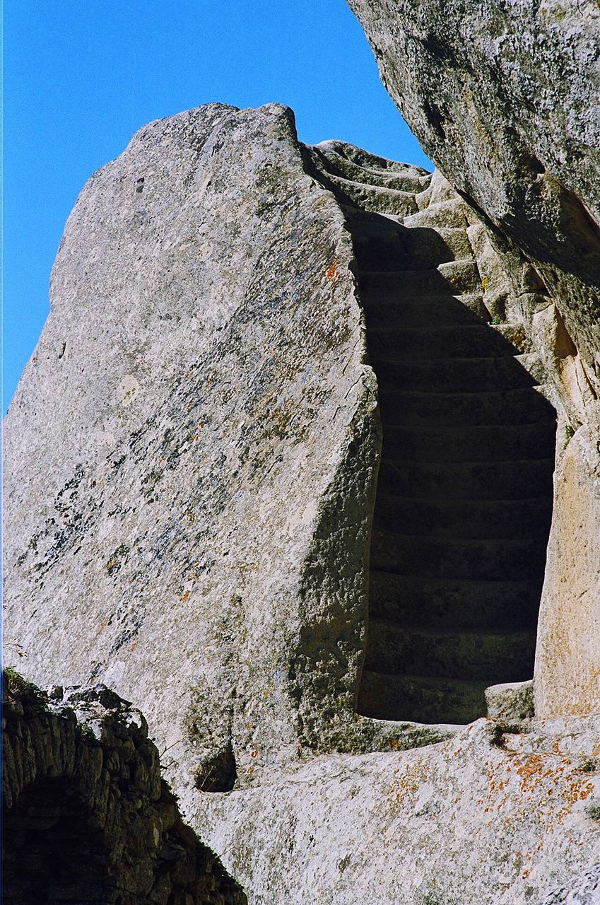
Cosa si fa davvero qui
Palinuro e Camerota: escursioni in barca all'alba, Grotta Azzurra, Grotta del Sangue, bagno al Buondormire. Porta scarpette da scoglio.
Paestum + Velia in un giorno con audioguida e museo. A Paestum il 18–19 agosto le colonne si allineano al tramonto.
Monte Cervati (1.898 m), Gole del Calore, Cascata Capelli di Venere, Grotte di Castelcivita e Pertosa. A piedi o in e-bike.
Mozzarella nella stessa mattina, alici di Menaica, fusillo di Felitto, fico bianco DOP, olio EVO. A Pioppi capisci perché si vive a lungo.
Copia, incolla, parti
Tempi di guida reali, niente «tutto in un giorno».
Vuoi progettare la tua esperienza nel Cilento? Scrivi a hello@gocilento.it
DOP, presìdi, osterie vere
Caseifici di Capaccio-Paestum. Mangiala entro 6 ore, ancora tiepida.
Pisciotta, pescate con la rete che seleziona. Presìdio Slow Food.
Pasta tirata al ferretto, sughi di carne dei monti. Lagane e ceci accanto.
Ottobre: frantoi aperti, pane cotto a legna, olive in olio nuovo.
Cantine tra Rutino, Agropoli e San Mauro. Terre vulcaniche, pochi imbottigliatori.
Il peso della palla 8 mesi nel legno. Seguito dal peperone crusco.
Leggere prima di partire
L'aeroporto Costa d'Amalfi e del Cilento è a Pontecagnano, 40′ da Paestum. Le stagionali cambiano: verifica sul sito della compagnia.
| Rotta | Stato |
|---|---|
| Londra STN · Ryanair | stagionale |
| Parigi ORY · Vueling, Transavia | attivo |
| Amsterdam · Transavia | attivo |
| Barcellona · Vueling | attivo |
| Madrid · Iberia | attivo |
| Vienna · Ryanair | stagionale |
| Bruxelles CRL · Ryanair | stagionale |
| Lione · Nantes · Volotea | attivo |
| Düsseldorf · Stoccarda · Eurowings | attivo |
| Dubai · flydubai | attivo |
Da QSR: bus Airlink verso la stazione Salerno 30–40′ ~5 €, poi Regionale. Alternativa: Napoli-Capodichino + Alibus.
Napoli–Reggio Calabria. Il Regionale Napoli–Sapri (~2h45) è la linea che ti lascia dove serve.
| Rotta | Stato |
|---|---|
| AV fino a Salerno · Frecciarossa / Italo | poi Regionale |
| Italo diretto ad Agropoli · da Napoli ~1h, da Roma ~2h04 | attivo |
| InterCity Notte da Milano · arriva all'alba | attivo |
| Vallo di Diano · nessun treno dal 1987 | solo bus + auto |
Orari live su monitor RFI e trenitalia.com. La Sicignano-Lagonegro non ha mai riaperto: per il Vallo di Diano serve altro.
A2 uscite Battipaglia–Eboli per Paestum e Agropoli; Atena Lucana–Sala Consilina–Padula-Buonabitacolo per l'interno; superstrada per Policastro e Sapri.
SS18 costiera: Agropoli → Palinuro sono 55 km in ~1h20, lenta e bellissima. In estate i parcheggi sono pieni prima delle 10.
In loco: bus estivi Cilento Blu fra i borghi, barca condivisa a Palinuro/Camerota da €25. Non prenotiamo niente: orari e prezzi cambiano, verifica in porto, al museo, in stazione.